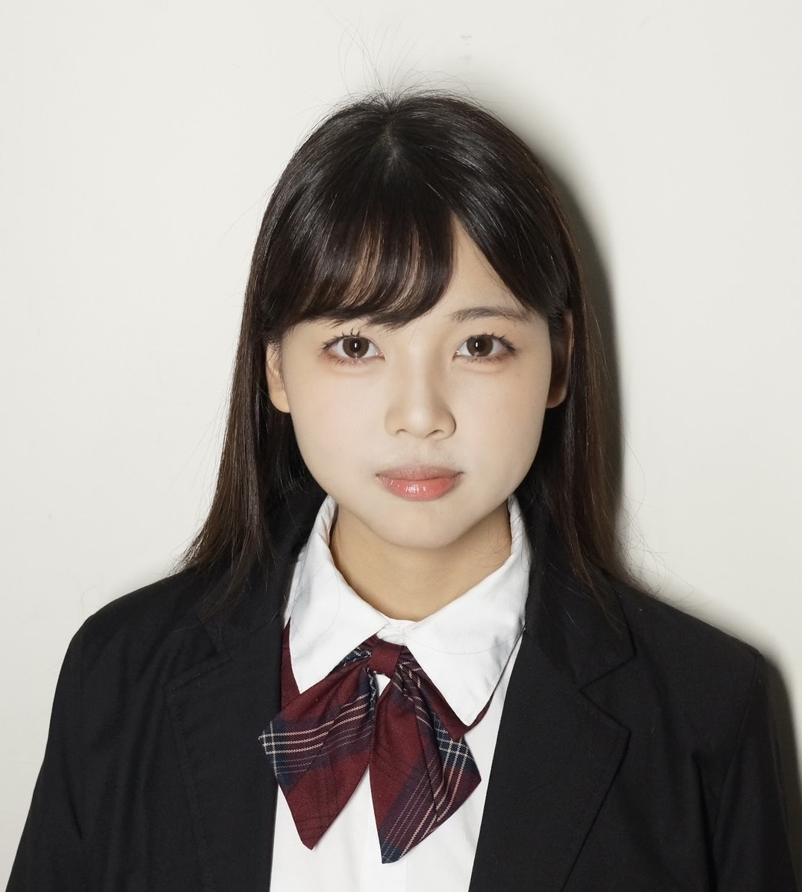
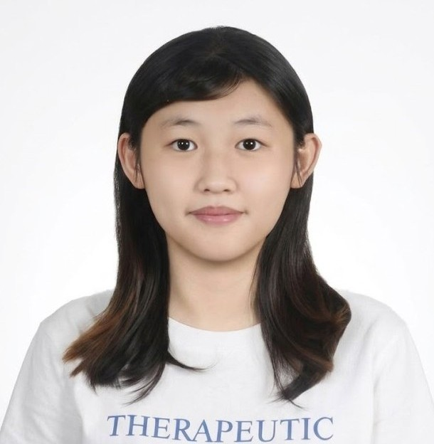
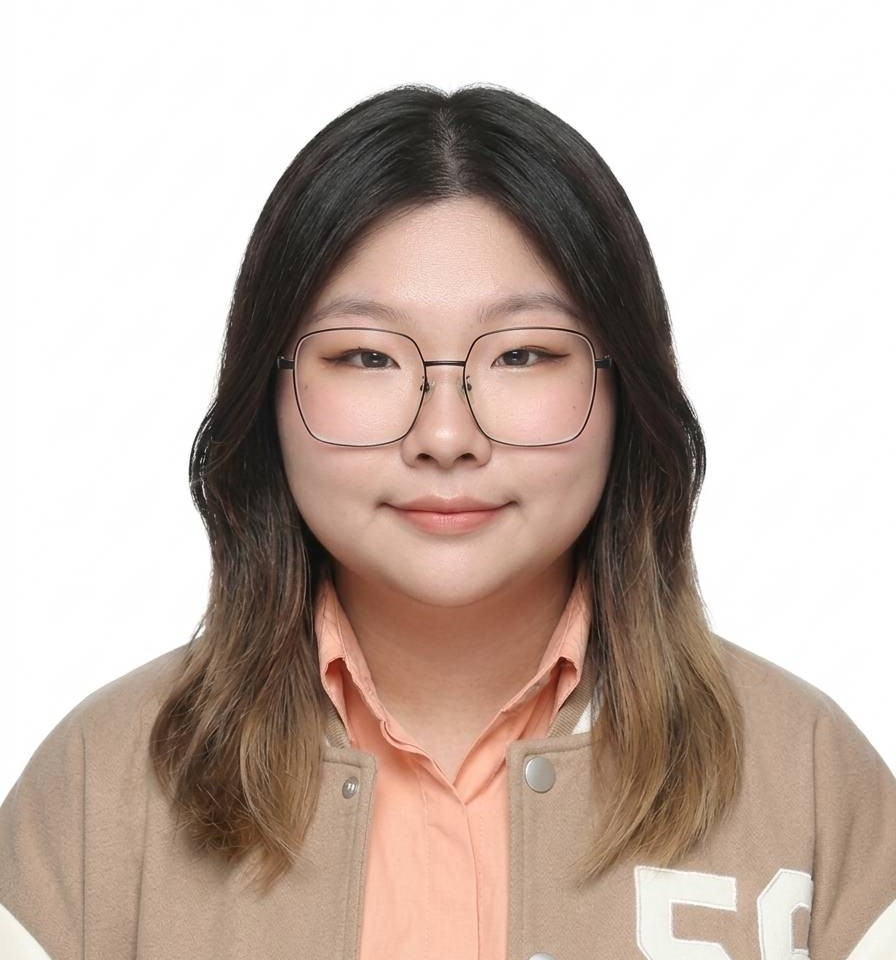

我們是來自雲林科技大學創意生活設計系的學生，想要透過這次的專題，讓大家更了解斗六建築的相關歷史。

江孟璇
負責酷卡製作、故事架構、機關發想與資料查找，透過有趣的故事內容將歷史傳達給讀者們。

蔡易倫
負責網站製作與架設、資料查找、機關發想與圖片繪製，利用數位的方式呈現歷史建築有趣的地方。

蕭聖馨
負責立體結構研發、標準字設計、機關發想與角色設計，將現實的歷史建築以紙雕的方式呈現給讀者。